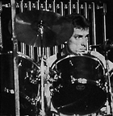

After 13 years of work, Rush had forged a real identity, shaking loose the heavy-metal tag that had burdened the band for so long. "We never considered ourselves a heavy metal group, anyway," snaps blond guitarist Alex Lifeson. "We feel we have more to offer than that."
At the same time, Rush was playing an exhaustive tour that took the band from Kalamazoo, Michigan on February 20 to East Troy, New York on July 5. There was hard]y a free night in between. Man for man, Rush was making itself the biggest North American rock group of spring 1981: The band would go on to play 79 concerts for 905,000 fans, and rake in over $4 million. Unlike the room-demolishing quintet REO Speedwagon, Rush had only three members to divide the spoils among, and never had to dip into its earnings to pay for hotel damages.
"We have better things to do with our time and money," insists a management spokesman; for example, making sure that Rush albums are engineered and manufactured with a bit more subtlety than the rules of hard rock demand, using a special EQ and digital mastering for a warm FM sound with plenty of depth. The story of this past spring's breakthrough success is largely the story of how Pictures was made.
"At Stony Lake, Ontario the previous August," Neil Peart recalls dryly, "we were banished to the barn where we rehearse, and we began assembling ideas. On August 31 we returned to Phase One Studio in Toronto and put together some rough demos of the five songs we'd written at the barn." With the band was producer Terry Brown, who "fouled the air with Gitanes cigarettes," according to Neil, "and offered criticism and suggestions." A sixth song, "Witch Hunt" (Peart's most up-to-date celebration of freedom of choice), was picked unanimously for the forthcoming album's "full-fledged production number," to be recorded and overdubbed along the lines of the earlier "Madrigal."
At one point the proceedings turned almost as sinister as a real New England witch hunt. Explains Peart: "Recording the introduction was a very strange endeavor. We assembled a 'Vigilante Choir' [the song makes reference to witch-hunting 'vigilantes' like the Rev. Jerry Falwell] made up of the band, our equipment people and friends. The choir sang out in the snow; then we got the sound of the 'haunted child' at the beginning. Though the main thrust of our work has always been directed toward live presentation, sometimes it's nice to take a small dose of studio indulgence."
In September Rush made the kind of move that can spell the difference between a Top 10 and a Top Three album, embarking on a whirlwind eastern seaboard tour to play some of the new songs live and iron out kinks in the arrangements. "We rehearsed the completed songs whenever possible," says Peart, "and introduced 'Tom Sawyer' and 'Limelight' into our shows, although both underwent some changes before being committed to tape."
When the trio returned to Morin Heights, Quebec on October 2, it had those two songs down so tightly that it was no wonder they were all over international radio a few months later. Significantly, both were in unusually low keys for singer Geddy Lee.
"You've got to face it," Lee admits. "[Before Moving Pictures] we had a very raw sound, and a lot of people didn't want to put that sound on the radio. Also, I had a very weird voice that people didn't think was suitable." Rush dropped the key signatures just enough to force Geddy to sing in a smoky baritone instead of the countertenor wail he'd made famous. Programmers and even housewives couldn't resist the new Rush sound, with its controlled vocals and its even rhythms. "All through the album," says Geddy, "we'd lock into a groove, and we'd stay there for a while and hang out. It was a nice change from our old stuff; it didn't seem so abrupt."
Adds Jim Sotet, PolyGram Records Executive for National Album Promotion: "Moving Pictures has also been successful because Rush has remained loyal to a rock & roll style. When the group fiddles with reggae on 'Vital Signs,' you don't hear any trendy Kingston accent in the vocal. Rush has never been swayed by fads or by the public relations side of the music business. You never heard a Rush disco record, did you? Even when the guys alter their sound, it's got to be on their own terms."
The latest Rush record, Exit... Stage Left!, is a double live set that reinterprets songs drawn largely from the four studio LPs made since All The World's A Stage. Like all Rush's recent work, the project was carried out under strict band supervision.
"Yes, we made a few repairs to the record," Neil Peart confides. "A part here and there would ruin an otherwise perfect song, so we patched up the odd bit. Sometimes we had hit the wrong thing or gone suddenly out of tune. When the two worlds of concerts and studios collide," he explains, "it creates a real pressure zone for us. It would be so much easier if we were perfect!"
 Peart's penchant for getting things right has been a Rush hallmark ever since the slim, dark drummer joined the band in 1974. A Toronto native, Peart tried out his sticks and mallets in Britain, hoping to establish a reputation, but when childhood friends Geddy Lee and Alex Lifeson fell out with Rush charter drummer John Rutsey after one LP, Peart discovered his real niche.
"We had a pretty definite idea as to what we wanted," Lee explains, "and as soon as Neil came in and sat behind his kit, we just knew he was right. He was doing things we'd always wanted to hear behind our music -- and Neil is also our man of words." It was Peart's imagination that fueled the futurist space musical 2112 in 1976, and since then he's often been regarded as a near-supernatural being by Rush's trippier fans. But Peart, who lives at a farmhouse and whose tastes run to sailing, skiing and hockey rather than to seances, wants the crowds to understand that he and his partners are people, not "demigods."
Rush will have its hands full till spring with rehearsals and tours of Europe and the U.S. The group is making use of these two dozen or more planned dates to try out the new song "Subdivisions" which, like "Tom Sawyer," is expected to make some headway as a 45.
But when the powerhouse returns to record in Canada in 1982, bands like Van Halen will have to gird themselves more tightly for battle if they hope to beat Rush on its own rock-hard North American ground.
{kind=link}